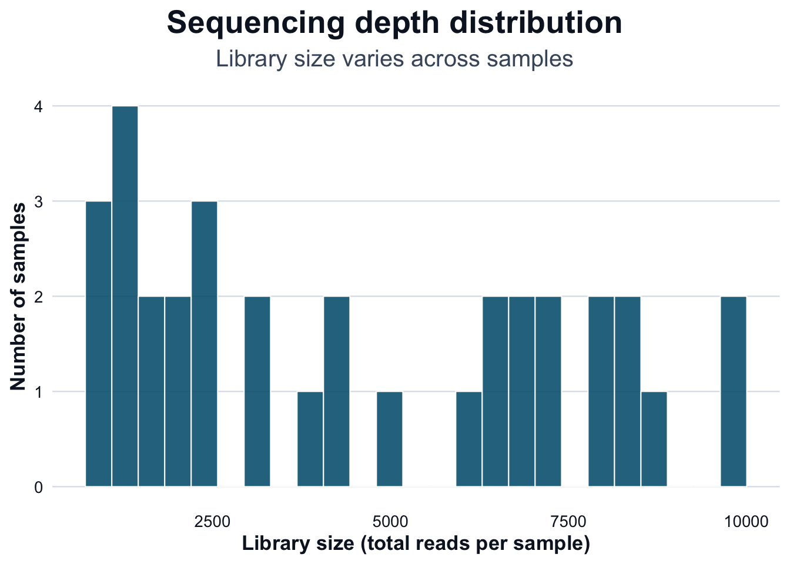
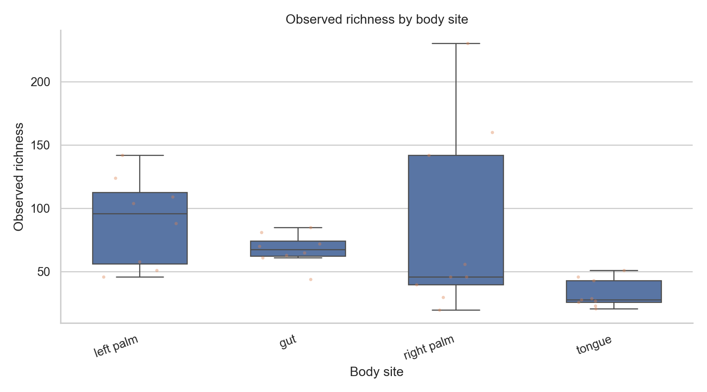
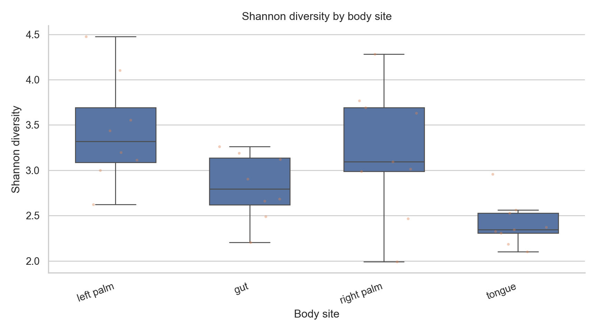
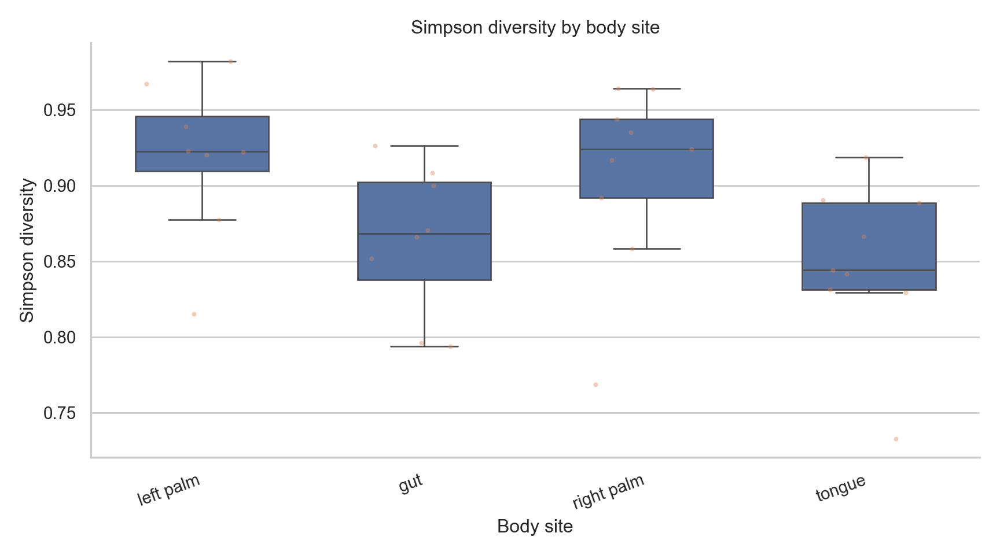
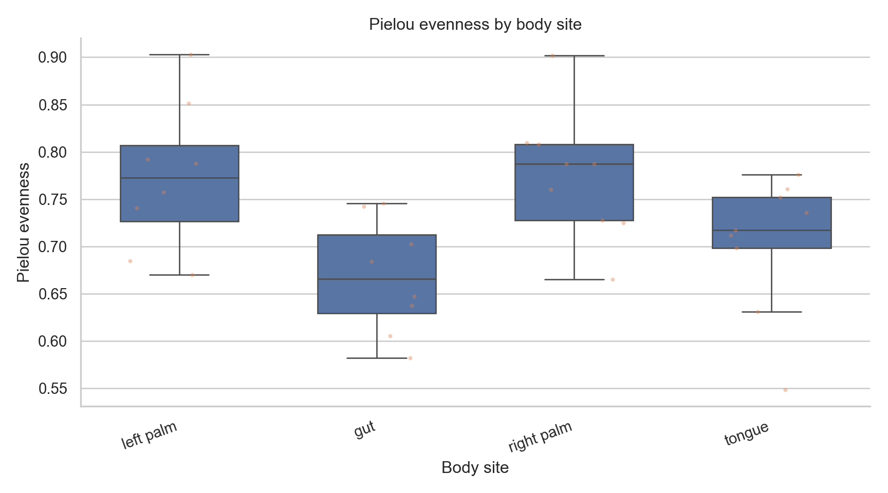

library(phyloseq)
library(vegan)
ps <- readRDS("data/moving-pictures-ps.rds")Diversity Analysis
Diversity Analysis
Alpha diversity summaries are common in microbiome studies.
They are useful — but only when interpreted carefully.
This chapter focuses on:
- what alpha diversity measures
- how sequencing depth affects diversity
- how to interpret group differences responsibly
Load Data
Check Sequencing Depth (R → Python)
Alpha diversity is sensitive to sequencing depth.
lib_size <- phyloseq::sample_sums(ps)
df_lib <- data.frame(
sample_id = names(lib_size),
library_size = as.numeric(lib_size),
stringsAsFactors = FALSE
)
dir.create("outputs/tables", recursive = TRUE, showWarnings = FALSE)
readr::write_csv(df_lib, "outputs/tables/library-size.csv")
summary(df_lib$library_size) Min. 1st Qu. Median Mean 3rd Qu. Max.
897 1838 4010 4524 7013 9820 import pandas as pd
import seaborn as sns
import matplotlib.pyplot as plt
df = pd.read_csv("outputs/tables/library-size.csv")
sns.set_theme(style="whitegrid")
plt.figure(figsize=(9,5))
sns.histplot(df["library_size"], bins=30, kde=True)
plt.title("Sequencing depth distribution")
plt.xlabel("Library size (total reads per sample)")
plt.ylabel("Number of samples")
sns.despine()
plt.tight_layout()
plt.show()
Compute Alpha Diversity (R)
otu <- methods::as(phyloseq::otu_table(ps), "matrix")
if (!phyloseq::taxa_are_rows(ps)) otu <- t(otu)
observed <- colSums(otu > 0)
shannon <- vegan::diversity(t(otu), index = "shannon")
simpson <- vegan::diversity(t(otu), index = "simpson")
pielou <- shannon / log(pmax(observed, 1))
alpha_df <- data.frame(
sample_id = colnames(otu),
observed = observed,
shannon = shannon,
simpson = simpson,
pielou = pielou,
stringsAsFactors = FALSE
)
meta <- data.frame(phyloseq::sample_data(ps))
meta$sample_id <- rownames(meta)
alpha_df <- merge(alpha_df, meta, by = "sample_id", all.x = TRUE)
cols <- names(alpha_df)
body_col <- intersect(c("body-site", "body.site", "body_site"), cols)
if (length(body_col) == 0) {
stop(
"Body site column not found. Available columns: ",
paste(cols, collapse = ", ")
)
}
alpha_df$body_site <- alpha_df[[body_col[1]]]
alpha_df$library_size <- phyloseq::sample_sums(ps)[alpha_df$sample_id]
readr::write_csv(alpha_df, "outputs/tables/alpha-diversity.csv")
head(alpha_df) sample_id observed shannon simpson pielou barcode.sequence body.site
1 L1S105 63 2.682108 0.8707597 0.6473620 AGTGCGATGCGT gut
2 L1S140 65 2.660947 0.8518507 0.6374460 ATGGCAGCTCTA gut
3 L1S208 85 3.121034 0.8999369 0.7025161 CTGAGATACGCG gut
4 L1S257 81 3.262504 0.9261295 0.7424147 CCGACTGAGATG gut
5 L1S281 72 3.189387 0.9082814 0.7457648 CCTCTCGTGATC gut
6 L1S57 70 2.905920 0.8661380 0.6839881 ACACACTATGGC gut
year month day subject reported.antibiotic.usage
1 2009 3 17 subject-1 No
2 2008 10 28 subject-2 Yes
3 2009 1 20 subject-2 No
4 2009 3 17 subject-2 No
5 2009 4 14 subject-2 No
6 2009 1 20 subject-1 No
days.since.experiment.start body_site library_size
1 140 gut 7780
2 0 gut 7163
3 84 gut 8152
4 140 gut 6388
5 168 gut 6615
6 84 gut 8702Visualize Alpha Diversity (Python, Seaborn)
import pandas as pd
import seaborn as sns
import matplotlib.pyplot as plt
df = pd.read_csv("outputs/tables/alpha-diversity.csv")
df = df.dropna(subset=["body_site"])
sns.set_theme(style="whitegrid")
metrics = [
("observed", "Observed richness"),
("shannon", "Shannon diversity"),
("simpson", "Simpson diversity"),
("pielou", "Pielou evenness"),
]
order = (
df.groupby("body_site")["observed"]
.median()
.sort_values(ascending=False)
.index
)
for col, title in metrics:
fig, ax = plt.subplots(figsize=(9,5))
sns.boxplot(
data=df,
x="body_site",
y=col,
order=order,
showfliers=False,
width=0.6,
ax=ax
)
sns.stripplot(
data=df,
x="body_site",
y=col,
order=order,
size=3,
alpha=0.4,
jitter=0.25,
ax=ax
)
ax.set_title(f"{title} by body site")
ax.set_xlabel("Body site")
ax.set_ylabel(title)
sns.despine()
plt.setp(ax.get_xticklabels(), rotation=20, ha="right")
fig.tight_layout()
plt.show()<Axes: xlabel='body_site', ylabel='observed'>
<Axes: xlabel='body_site', ylabel='observed'>
Text(0.5, 1.0, 'Observed richness by body site')
Text(0.5, 0, 'Body site')
Text(0, 0.5, 'Observed richness')
[None, None, None, None, None, None, None, None]
<Axes: xlabel='body_site', ylabel='shannon'>
<Axes: xlabel='body_site', ylabel='shannon'>
Text(0.5, 1.0, 'Shannon diversity by body site')
Text(0.5, 0, 'Body site')
Text(0, 0.5, 'Shannon diversity')
[None, None, None, None, None, None, None, None]
<Axes: xlabel='body_site', ylabel='simpson'>
<Axes: xlabel='body_site', ylabel='simpson'>
Text(0.5, 1.0, 'Simpson diversity by body site')
Text(0.5, 0, 'Body site')
Text(0, 0.5, 'Simpson diversity')
[None, None, None, None, None, None, None, None]
<Axes: xlabel='body_site', ylabel='pielou'>
<Axes: xlabel='body_site', ylabel='pielou'>
Text(0.5, 1.0, 'Pielou evenness by body site')
Text(0.5, 0, 'Body site')
Text(0, 0.5, 'Pielou evenness')
[None, None, None, None, None, None, None, None]



Depth Sensitivity Check (Python)
import numpy as np
df = pd.read_csv("outputs/tables/alpha-diversity.csv")
plt.figure(figsize=(8.5,5))
sns.scatterplot(data=df, x="library_size", y="observed", alpha=0.7)
coef = np.polyfit(df["library_size"], df["observed"], 1)
x = np.linspace(df["library_size"].min(), df["library_size"].max(), 200)
plt.plot(x, coef[0]*x + coef[1])
plt.title("Observed richness vs sequencing depth")
plt.xlabel("Library size")
plt.ylabel("Observed richness")
sns.despine()
plt.tight_layout()
plt.show()
Interpretation
What these plots show
- Distribution of diversity within groups
- Variability across samples
- Dominance vs evenness patterns
What they do not show
- Absolute abundance
- Statistical significance
- Causation
- Confounder adjustment
Alpha diversity is descriptive unless formally tested.